01Abstract
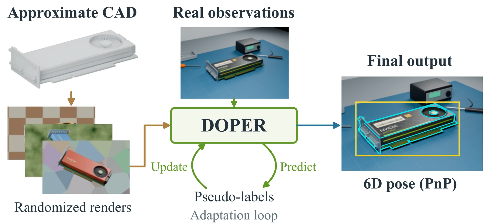
We present DOPER, an RGB pose estimation framework that shares a visual backbone across object detection, segmentation, and keypoint prediction to recover the 6D pose of known objects through Perspective-n-Point. Starting from synthetic training, DOPER adapts to real observations using partial supervision while retaining synthetic keypoint labels. Calibrated multi-view observations provide geometric constraints for keypoint supervision. During inference, optional heatmap refinement fits a rigid pose directly to the predicted keypoint distributions, resolving ambiguous correspondences without depth input or a learned pose refiner. Starting from underspecified CAD models, DOPER progressively refines the object representation and pose estimator. Results on SPEED+ and SHIRT further demonstrate effective adaptation to illumination changes and accurate temporal pose estimation. Across the evaluated single-view and multi-view configurations, DOPER achieves state-of-the-art detection AP results on HANDAL, HOPEv2, HOT3D, and T-LESS while using only RGB and running in real time (35 Hz per object model on one GB300). These results demonstrate the effectiveness of jointly learning detection and pose keypoints, with real observations and geometric constraints.
02Method
DOPER is object-specific. Given a calibrated RGB image, an approximate CAD model with known metric scale, and a fixed set of object-frame keypoints, it detects the object, predicts a heatmap per keypoint in a high-resolution crop, and recovers rotation and translation with robust PnP. Detection on the full image and keypoint prediction on the crop share one ConvNeXt backbone, pretrained with DINOv3.
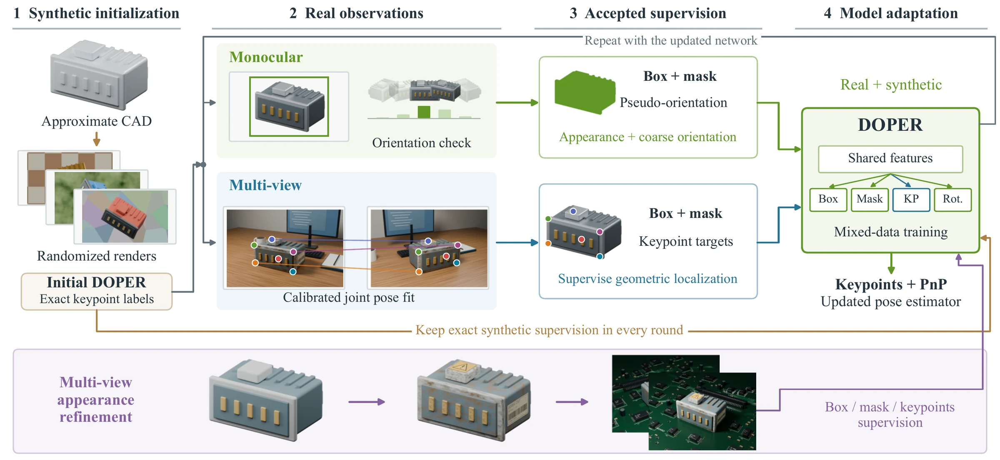
- Synthetic initializationDomain-randomized renders of the CAD model provide boxes, masks and exact keypoint labels to train the first estimator.
- Real observationsSingle-camera images are kept only if they pass an orientation check. For calibrated multi-camera captures, one pose is fit jointly across all views.
- Accepted supervisionAccepted single-camera images provide box, mask and coarse-orientation targets. Multi-view fits also provide keypoint targets that agree across views.
- Model adaptationEach round fine-tunes the model on a fixed mix of real and synthetic images. Every batch includes synthetic images with exact keypoint labels.
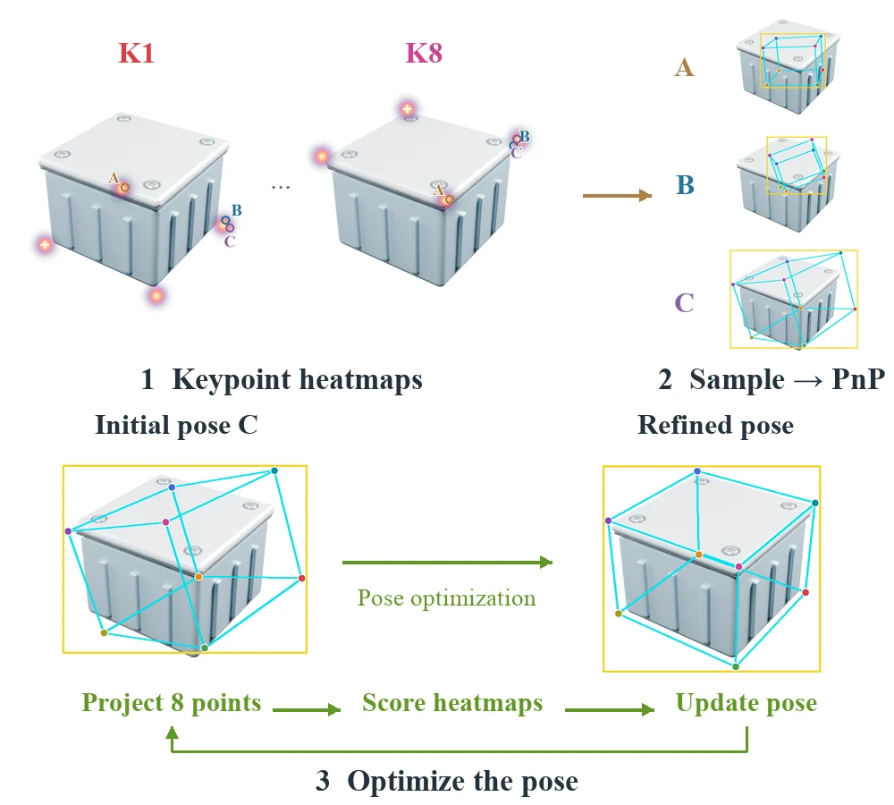
Resolving ambiguous keypoints
Symmetric shapes and unclear image evidence can give one keypoint heatmap several peaks, so choosing each keypoint's location on its own is unreliable. Instead, DOPER projects the CAD keypoints into their heatmaps and reads the log probability at each projected point. A bounded non-linear optimizer adjusts the object's rotation and translation to minimize the summed negative log probability, moving all keypoints together through one rigid pose.
With several calibrated views, the same objective is summed over all views while the cameras stay fixed. An update is kept only if it improves the objective and leaves the keypoints in front of every camera. No depth and no learned pose refiner are needed.
03Results on BOP
Official BOP test results. In single-view evaluation, every object model runs on every image and keeps up to five detections with confidence above 0.15 before PnP. Ground-truth boxes and the list of objects in each image are not used. MV refers to multiview inference; here, four views are used with calibrated support cameras. Their annotations are never used.
04Adapting from an underspecified CAD model
Real CAD models are often incomplete. We removed the texture, or 20% of the geometry, from 19 HANDAL objects, reconstructed each object from its onboarding video with NuRec, and replaced half of the synthetic training images with NuRec composites. Compared with matched composites of the degraded CAD model, NuRec improves validation AR by +23.6 points (95% CI 13.4–33.8) without texture and +16.3 points (10.8–21.9) with 20% removed.
05Spacecraft pose estimation: SPEED+ and SHIRT
SPEED+ tests whether a model trained on synthetic renders works on real photographs of a Tango spacecraft mockup, under two lighting conditions. DOPER adapts to these photographs over several rounds without using their pose labels. On SHIRT, we run the final adapted model, unchanged, along two rendezvous trajectories.
SPEED+ score, lower is better
Synthetic Training Data
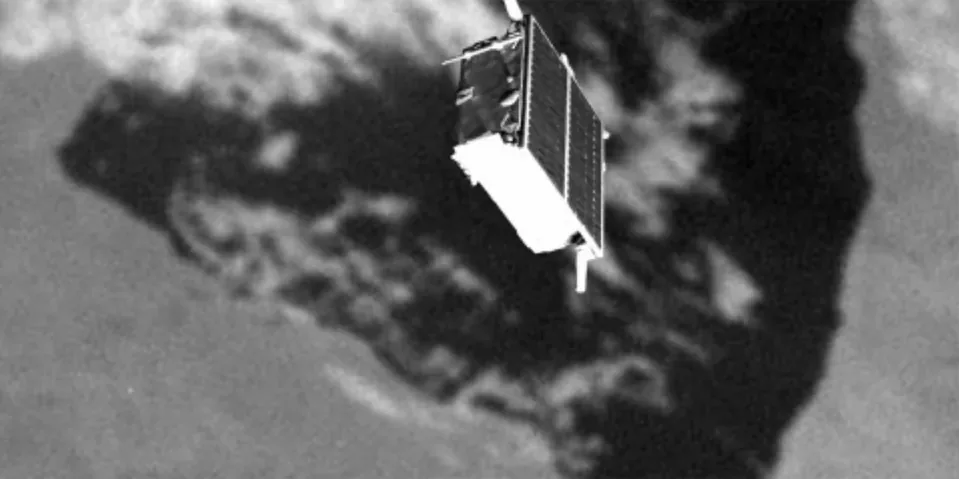
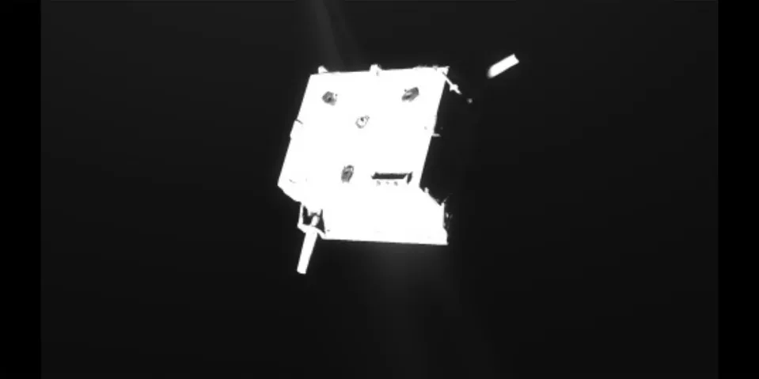
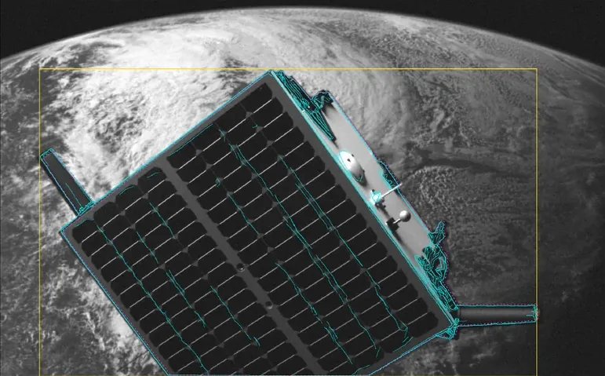
Lightbox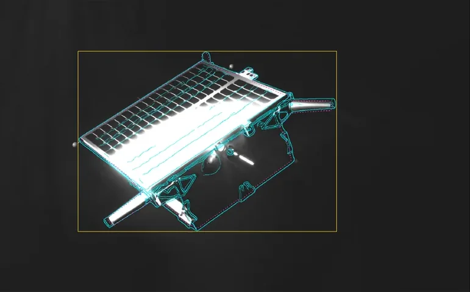
SunlampSHIRT tracking pose errors, lower is better
Second-orbit mean position error (cm)
06Code and usage
The code is released under Apache-2.0. It requires Python 3.11 or newer, uv, and Blender 4.2 LTS or newer for rendering. Every doper command accepts --dry-run, which prints its steps without modifying data.
-
Installation
git clone https://github.com/NVlabs/DOPER.git cd DOPER uv sync source .venv/bin/activateOptional features are extras, for example
uv sync --extra bop --extra refine. The minimal example is an end-to-end check: it takes the public-domain 3DBenchy model from keypoint selection to a short training run. -
Keypoint selection and synthetic data generation
blender --background --python rendering/mesh_setup.py -- --input CAD --output draft.blend \ --source-units m --center-geometry --centered-mesh-output centered.stl python -m doper.keypoint_selection --mesh centered.stl --source-units m \ --object-frame aabb_centered --out-json keypoints.json --object-name object --keypoint-prefix KP_object_ blender --background --python rendering/mesh_setup.py -- --input CAD --output object.blend \ --source-units m --center-geometry --keypoints-input keypoints.json --usd-output object.usda \ --keypoints-output keypoints_3d.json python rendering/synth_parallel.py --blend-file object.blend --usd object.usda \ --config configs/synth_example.yaml --outdir data/train --num-images 200 --num-workers 2This writes a COCO-style split with images, masks, annotations and
keypoints_3d.json. Render a validation split the same way. -
Training
cp doper/recipes/train_example.yaml my_training.yaml # edit data_root, keypoints_3d, work_dir python -m doper.train --config my_training.yaml --dry-run python -m doper.train --config my_training.yamlThe default backbone is DINOv3 ConvNeXt-Small, downloaded through
timmunder Meta's DINOv3 License. -
Inference on a recorded sequence
python -m doper.infer_recorded --checkpoint runs/best.pth \ --data-dir recordings/cam_0 --keypoints-3d data/keypoints_3d.jsonDetection, keypoint prediction and PnP run on every frame of a single-camera recording; the outputs are overlay images, an MP4 and per-frame poses.
-
Reproducing the paper results
doper prepare handal --root data/bop --dry-run doper train handal --stage base --root data/bop --runs runs --obj-id 1 --dry-run doper evaluate handal --split val --root data/bop --runs runs --dry-run doper report handal --runs runs --dry-runRecipes cover HANDAL, HOPEv2, HOT3D and T-LESS end to end, SPEED+ data preparation, and the SHIRT evaluation; the README lists all of them.
07Onboarding gallery
08Static gallery

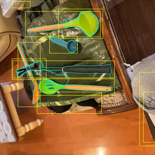

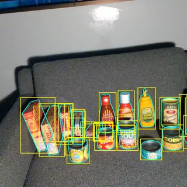

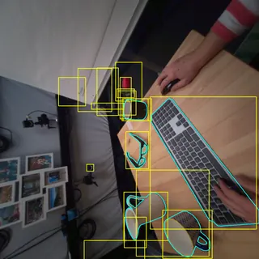

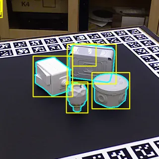

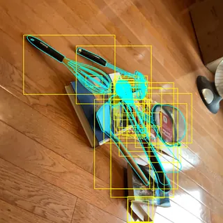

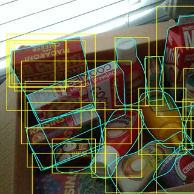

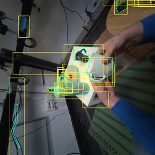

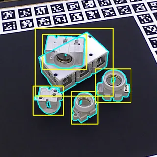

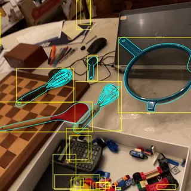

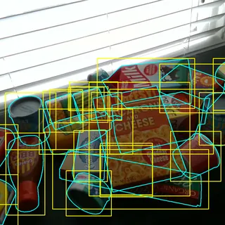

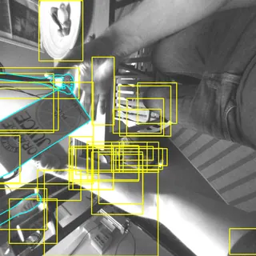

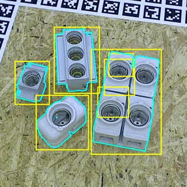

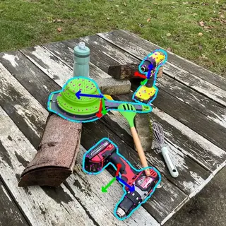

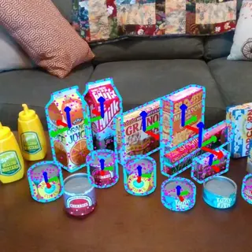

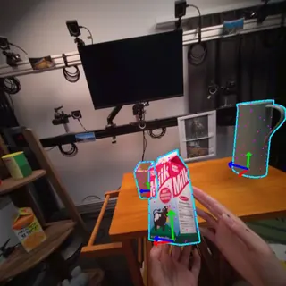

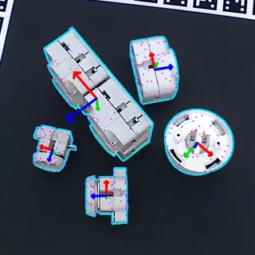

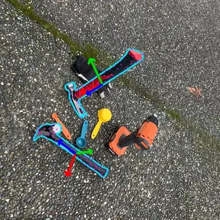

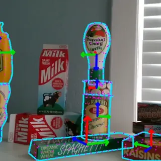

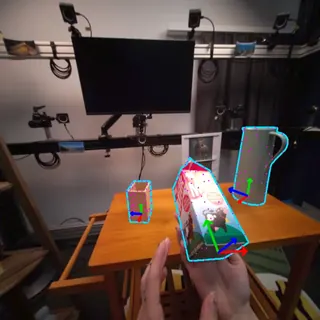

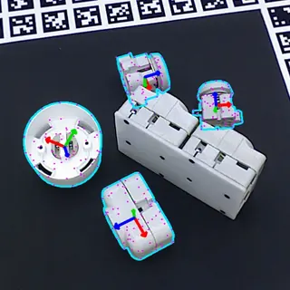

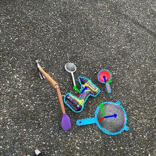

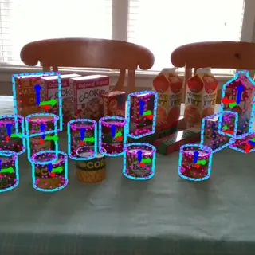

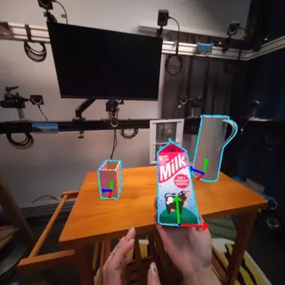

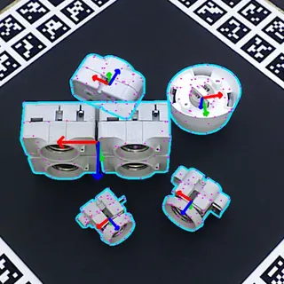

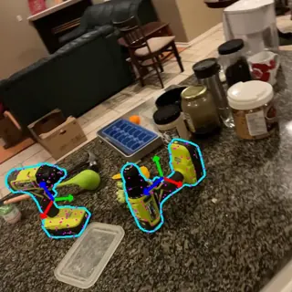

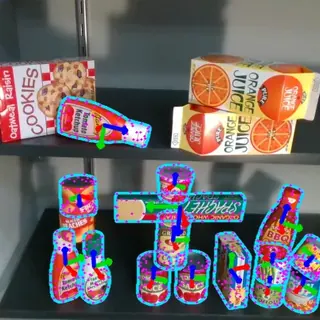

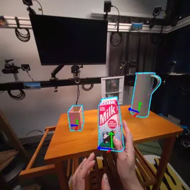

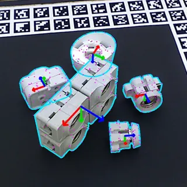

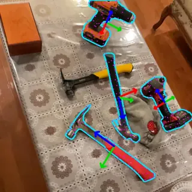

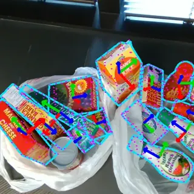

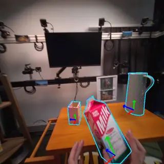

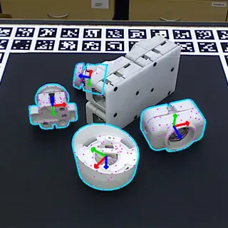
09How to cite
@misc{hadfield2026doper,
title = {{DOPER}: Deep Object Pose Estimation Revisited},
author = {Hadfield, Hugo and Degirmenci, Alperen and Tremblay, Jonathan},
year = {2026},
url = {https://github.com/NVlabs/DOPER}
}The arXiv identifier will be added when the paper is posted.